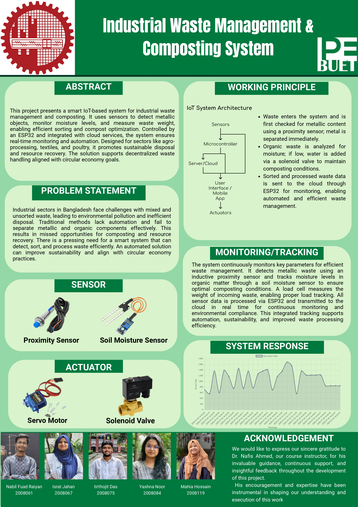

Smart industrial waste sorting and composting management system using automated sensor-based detection and processing optimization.
| Device / Component | Quantity | Task / Function |
|---|---|---|
| Inductive Proximity Sensor (LJ18A3-8-2/BX) | 1 | Detects and separates metal/non-organic waste |
| Soil Moisture Sensor (YL-69 + YL-38) | 1 | Monitors compost/moisture level |
| Load Cell (HX711 + 5kg Load Cell) | 1 | Measures waste/compost weight |
| Servo Motor (MG996R) | 1 | Drives sorting gates |
| Solenoid Valve (12V DC) | 1 | Controls fluid/air flow for composting process |
| Relay Module (4-Channel 5V) | 1 | Switches various high power devices (motors, pumps, etc.) |
| ESP32 | 1 | Data processing, Wi-Fi, sends data to server/cloud |
| Arduino UNO | 1 | Controls sensors, actuators, and local processing |
In Bangladesh, this Smart Industrial Waste Sorting and Composting Management System is especially relevant for agro-based, food processing, textile, poultry, and urban industrial sectors. It helps in sorting organic from non-organic waste, enabling composting and recycling.
For example, agro-industries produce peels and husks, textile industries generate fabric scraps, and poultry farms accumulate biodegradable droppings. Traditional waste handling in these sectors is inefficient. The proposed system detects and separates metal, monitors compost moisture, and evaluates weight with the help of sensors.
The system uses an ESP32 microcontroller and Python-based processing to automate sorting and composting operations. It sends real-time sensor data to a cloud server for monitoring and regulatory compliance. By decentralizing waste management, it supports sustainability, reduces environmental pollution, and aligns with circular economy goals.

#include <Servo.h>
Servo servo1;
Servo servo2;
const int sensorPin = A0;
const int threshold = 1000;
const int servo1Pin = 9;
const int servo2Pin = 10;
void setup() {
Serial.begin(9600);
servo1.attach(servo1Pin);
servo2.attach(servo2Pin);
// Set initial servo positions
servo1.write(0);
servo2.write(0);
}
void loop() {
int sensorValue = analogRead(sensorPin);
Serial.print("Soil moisture value: ");
Serial.println(sensorValue);
if (sensorValue < threshold) {
// If dry soil: spin both servos
servo1.write(90); // Move to mid position
servo2.write(90);
delay(1000); // Hold for 1 second
// Return to initial position
servo1.write(0);
servo2.write(0);
delay(1000); // Optional delay
}
delay(500); // Check every 0.5 seconds
}
ESP32 Code (Data Upload):
#include <WiFi.h>
#include <HTTPClient.h>
// WiFi credentials
const char* ssid = "Your_SSID";
const char* password = "Your_PASSWORD";
// Server URL (replace with correct one if needed)
String baseURL = "http://ipe20-buet.top/get_data.php?g=groupB4&sn=Sensor&sd=13&p=passB4&format=json";
// Define pins for Serial2
#define RXD2 16 // ESP32 GPIO16 to Arduino UNO TX
#define TXD2 17 // ESP32 GPIO17 to Arduino UNO RX
void setup() {
// Debug Serial Monitor
Serial.begin(115200);
// Serial2 for Arduino communication
Serial2.begin(9600, SERIAL_8N1, RXD2, TXD2); // Use GPIO16 (RX) and GPIO17 (TX)
// Connect to WiFi
WiFi.begin(ssid, password);
Serial.print("Connecting to WiFi");
while (WiFi.status() != WL_CONNECTED) {
delay(500);
Serial.print(".");
}
Serial.println("\nWiFi connected");
}
void loop() {
if (Serial2.available()) {
String sensorData = Serial2.readStringUntil('\n');
sensorData.trim();
Serial.println("Received from Arduino: " + sensorData);
// Prepare GET request URL
String fullURL = baseURL + "&data=" + sensorData;
if (WiFi.status() == WL_CONNECTED) {
HTTPClient http;
http.begin(fullURL);
int httpCode = http.GET();
if (httpCode > 0) {
String response = http.getString();
Serial.println("Server response: " + response);
} else {
Serial.println("HTTP GET failed. Code: " + String(httpCode));
}
http.end();
} else {
Serial.println("WiFi not connected.");
}
}
delay(2000);
}